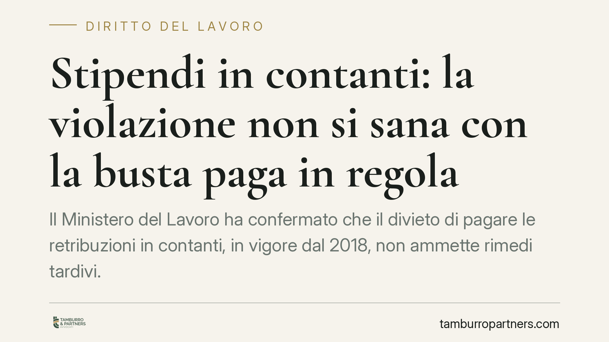

Stipendi in contanti: la violazione non si sana con la busta paga in regola
Il Ministero del Lavoro ha confermato che il divieto di pagare le retribuzioni in contanti, in vigore dal 2018, non ammette rimedi tardivi. La sanzione resta dovuta anche quando il datore regolarizza in un secondo momento il Libro unico del lavoro. Per le imprese cambia l'approccio: non basta la documentazione formale, serve un canale di pagamento tracciabile.

Il fatto
Il Ministero del Lavoro è intervenuto per chiarire un dubbio operativo ricorrente: il pagamento dello stipendio in contanti costituisce una violazione non sanabile. In termini pratici, significa che il datore di lavoro non può evitare la sanzione dimostrando di aver poi registrato correttamente l'operazione nel Libro unico del lavoro (LUL), il registro obbligatorio dove sono annotati i dati retributivi di ogni dipendente.
La posizione del Ministero chiude la porta a un'interpretazione diffusa, secondo cui una corretta documentazione successiva avrebbe potuto "coprire" l'irregolarità del pagamento. Non è così: la violazione si consuma nel momento in cui la retribuzione viene corrisposta in contanti, a prescindere da ciò che accade dopo.
Inquadramento normativo
Il divieto trova fondamento nell'art. 1, commi 910-913, della Legge n. 205/2017 (legge di bilancio 2018). La norma impone che le retribuzioni dei lavoratori subordinati, e assimilati, siano corrisposte esclusivamente attraverso strumenti tracciabili: bonifico sul conto del lavoratore, strumenti di pagamento elettronico, pagamento in contanti presso lo sportello bancario o postale dove il datore abbia aperto un conto corrente di tesoreria con mandato di pagamento, oppure assegno consegnato al lavoratore.
Il comma 913 prevede una sanzione amministrativa da 1.000 a 5.000 euro per il datore che viola l'obbligo. Il punto chiarito dal Ministero riguarda la natura della violazione: trattandosi di condotta che si esaurisce con il pagamento, non è ammessa la cosiddetta diffida amministrativa, ossia l'invito dell'ispettore a regolarizzare entro un termine per estinguere la sanzione. La diffida, infatti, opera solo per le violazioni "sanabili", quelle i cui effetti possono essere materialmente rimossi. Qui, una volta corrisposta la somma in contanti, non c'è nulla da sanare: il pagamento tracciabile successivo non ripristina la situazione originaria.
Implicazioni pratiche
Per i datori di lavoro il chiarimento ha un peso concreto. La prassi di consegnare contanti "di tasca" al dipendente, anche in buona fede e anche se poi la busta paga risulta perfettamente compilata, espone comunque alla sanzione in caso di accertamento ispettivo.
Non rileva la firma del lavoratore sulla busta paga quale prova di avvenuto pagamento: la firma attesta la ricezione, non il metodo con cui la somma è stata corrisposta. L'elemento dirimente è la tracciabilità del flusso finanziario.
Attenzione anche alle situazioni ibride: anticipi, acconti o integrazioni versati in contanti ricadono nel divieto se riferiti alla retribuzione. Non sono invece soggetti alla regola i rapporti espressamente esclusi dalla norma, come quelli con la pubblica amministrazione e alcune categorie specifiche indicate dalla legge.
Sul piano probatorio, in un eventuale contenzioso con il lavoratore sul quantum percepito, il pagamento non tracciato rende più difficile per il datore dimostrare l'effettivo versamento delle somme.
Cosa fare in concreto
- Verificate i canali di pagamento attualmente in uso per tutte le posizioni, comprese quelle marginali (part-time, stagionali, apprendisti) e intervenite dove permangano versamenti in contanti.
- Eliminate ogni corresponsione in contanti anche per acconti, anticipi e integrazioni: ogni somma a titolo retributivo deve transitare su strumento tracciabile.
- Conservate le evidenze bancarie (contabili di bonifico, estratti conto) a supporto del LUL: la documentazione del flusso tracciabile è la vostra tutela in sede ispettiva e in eventuale giudizio.
- Formate chi gestisce le paghe – responsabili amministrativi e consulenti – sulla non sanabilità della violazione, per evitare l'errore di affidarsi alla sola correttezza formale della busta paga.
- Ricostruite le posizioni pregresse eventualmente irregolari e valutate con un professionista l'esposizione sanzionatoria, anche in ottica di possibili accertamenti.
Conclusione
Il messaggio del Ministero è netto: la tracciabilità della retribuzione non è un adempimento formale recuperabile a posteriori, ma un obbligo sostanziale che si misura al momento del pagamento. Consigliamo alle imprese di trattare il tema come una priorità di compliance, non come una semplice questione di documentazione.
Contributo informativo a cura di Tamburro & Partners - Avv. Giuseppe Tamburro. Non costituisce parere legale.
Ogni storia di lavoro ha i suoi tempi.
Se gestisci HR e vuoi un confronto su contenzioso, ispezioni o licenziamenti, scrivi allo studio. Ti rispondiamo entro un giorno lavorativo.